Tópico 4: Condições climáticas, Present Simple e Present Continuous; Esportes e Lazer; Gostos e Preferências; Habilidades; Adverbs of Manner; Partes da casa e mobiliário, Verbos modais can e may; Possessive Pronouns
2.1 You can do it!
Com a chegada do inverno em Chicago a prática de esportes indoors se torna uma alternativa para fugir do frio. Rosa foi convencida por seus amigos a participar de uma partida de basquete, mas ela não teve muito jeito na tentativa. Acompanhe o diálogo a seguir:
Victor: You ready, Rosa?
Rosa: Oh my, now what?
Victor: Run… To the other side
Carly: Surprise Can’t you run faster, Rosa?
Victor: Jeez, what a tackle. Are you okay, Rosa?
Rosa: She takes this game too seriously... I think I’m done.
Dube: She’s pretty intense, I must admit.
Carly: Come on, guys
Rosa: Ok, good luck with her, I’m out… I think I can’t play basketball.
Billy: You should stick with our far superior football.
Christine: You mean soccer?
Billy: Football Foot-ball. We actually use our feet to play it.
Nessa conversa de Rosa com os amigos, possível observar o nome de alguns esportes. Acompanhe o conteúdo Verbs, sports and leisure activities para estudar alguns verbos associados à prática esportiva, bem como várias palavras relacionadas a esportes e atividades físicas.
2.2 Verbs, sports and leisure activities
Quando se trata de esportes, atividades físicas e lazer existe uma variedade de verbos que são utilizados e, dependendo do esporte ou atividade, há um verbo específico para expressá-los. Acompanhe alguns sports and activities a seguir:
Quando queremos nos referir à atividade em si (dance, surfe ou caminhadas), utiliza-se To go+verb+ing.
| To go exercising | To go jogging |
| To go skating | To go roller skating |
| To go sailing | To go skiing |
| To go hiking | To go surfing |
| To go dancing | To go fishing |
| To go cycling | To go swimming |
| To go climbing | To go camping |
Observe os exemplos:
What do you do on your vacation? I always go camping with my friends in the summer.
How often does she go swimming? She goes swimming three times a week.
Outros esportes e atividades são expressos com o verbo To play, já que são “jogados”. Observe:
 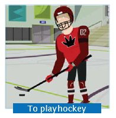
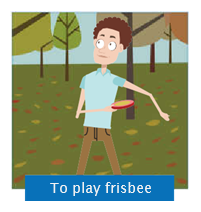
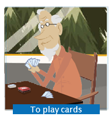
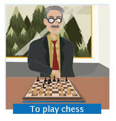
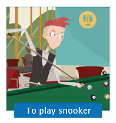
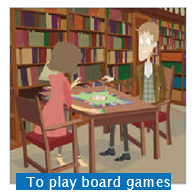
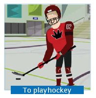
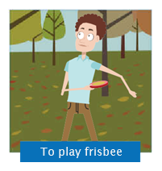
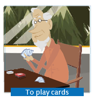
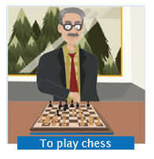
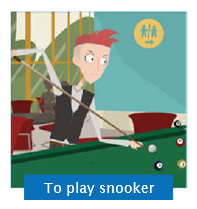
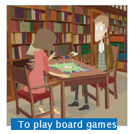
Observe os exemplo:
What does he play? He plays rugby.
What do you play? I play hockey.
Por fim, existem ainda esportes e atividades que são expressas com To do+activity:
Veja os exemplos:
What do you do to keep fit? I do yoga.
What does she do to get in shape? She does aerobics.
Muito cuidado porque, em português, utilizamos o verbo “praticar” quando falamos de esportes, mas em inglês dizemos To do sports ou To play sports. Já o verbo To practice é utilizado quando se está falando sobre “repetir uma ação a fim de aperfeiçoá-la”, ou seja, no sentido de “treinar”. Acompanhe os exemplos:
I practice my tennis service quite often.
He practices penalty kicks every day.
Os esportes ou atividades que fazemos têm a ver com nossos gostos ou preferências e, ao falarmos sobre o que fazemos em nosso tempo livre, muitas vezes expressamos o que gostamos ou não. Acompanhe, então, no Verbs of liking and disliking os verbos utilizados para isso.
2.3Verbs of liking and disliking
Saber expressar gostos e preferências é muito importante, mas não basta apenas conseguir dizer se gosta de algo ou não. É preciso conhecer formas de dizer o quanto se gosta. Por isso, observe alguns verbos que englobam a ideia gostar ou não gostar e a intensidade da preferência indicada em cada um.
Verifique que na ilustração onde encontra-se not mind. Essa expressão é utilizada quando a pessoa é indiferente ao que está sendo considerado, ou seja, não se importa com aquilo. Por exemplo, se você não é fã de baseball, mas também não tem nada contra esse esporte, pode dizer:
I don’t mind baseball
Rosa doesn’t like tennis
Já em relação a gostar, existem ainda outros verbos que são sinônimos para To like e To enjoy. São eles:
| To appreciate |
| To be fond of |
| To dig |
| To be keen on |
Assim, se, como os amigos de Rosa, você gosta de basketball, você pode dizer:
| I like basketball. |
| I enjoy basketball. |
| I appreciate basketball. |
| I am fond of basketball. |
| I am keen on basketball. |
| I dig basketball. |
Após esses verbos pode-se utilizar nouns ou outros verbs. Por exemplo, você pode dizer que gosta de futebol:
I like soccer.
Ou pode dizer que gosta de jogar futebol:
I like playing soccer.
I like to play soccer.
Como você pôde observar no exemplo sobre jogar futebol, após o verbo To like aparecem duas possibilidades: utilizar o verbo To play no infinitivo ou com a terminação -ing. Acompanhe:
| Like + ing | Like + to |
|---|---|
| I like playing soccer. | I like to play soccer. |
| I love playing soccer. | I love to play soccer. |
| I don't like playing soccer. | I don’t like to play soccer. |
| I hate playing soccer. | I hate to play soccer |
Em ambos os casos, o significado se mantém, e optar por uma ou outra forma é uma questão de uso. Entretanto, há situações distintas para o uso da terminação -ing ou a partícula To. Observe a tabela a seguir:
| -ing | to |
|---|---|
| Para expressar o que gosta ou odeia fazer em geral: | Para falar de uma situação específica: |
| I like swimming. | I like to swim in the morning. |
| Para expressar o sentimento causado pela atividade em questão: | Quando se referir ao que se gosta de fazer porque é conveniente ou aconselhável: |
| I like dancing with my children | I like to practice my volleyball skills on the weekend. |
Por outro lado, todos os outros verbos de liking and disliking - quer dizer, can’t stand, loathe, dislike, notmind e enjoy - quando seguidos de outros verbos exigem que esse segundo verbo venha sempre com -ing. Observe os exemplos
- I can’t stand practicing baseball swings.
- I loathe practicing baseball swings.
- I dislike practicing baseball swings.
- I don’t mind practicing baseball swings.
- I enjoy practicing baseball swings.
- I enjoy practicing baseball swings.
2.4 Modal verbs - introduction
Você viu no início da aula que Rosa comentou sobre basquete não ser seu esporte favorito. Apesar disso, seus amigos a encorajam a tentar aprender. Acompanhe a conversa:
Carly: Listen guys, what about exercising a bit to get warm in the college gym?
Victor: Hey, I’m in!
Billy: Me too – even though basketball isn’t my favorite sport. What about you, Rosa? Are you joining us?
Rosa: Hmm… well… I… I don’t know…
Christine: Why not? Don’t you like playing sports?
Rosa: No, no, I like it. In fact, I love exercising. I enjoy doing all kinds of physical activities, but to tell you the truth, I can’t play basketball.
Dube: What? How come you can’t play basketball?
Rosa: Hey, I can play soccer, volleyball, tennis and I can also swim, cycle and even roller skate… But I can’t play basketball very well!
Billy: I only learned how to play basketball when I moved to the USA, I myself am quite an accomplished footballer...er... “soccer player”.
Victor: Come on, Rosa! It’s going to be fun!
Carly: Yeah, we can teach you how to play. It’s really easy. After you learn to dribble, it’s just moving around the court and trying shots.
Christine: Rosa, don’t you love challenges? I know you can do it!
Rosa: Uh, OK. All right. I think I can manage that. I’m going with you.
Everybody but Rosa: Yay!
No diálogo entre Rosa e seus amigos aparecem frases como I can play soccer, volleyball, tennis and I can also swim e You can’t play basketball, nas quais está presente o verbo modal Can. Existem ainda outros verbos modais - could, may, might, shall, should, ought to, will, would e must -, os quais você estudará em lições futuras.
Os modal verbs expressam diversas ideias tais como habilidade, possibilidade, permissão ou obrigação e são verbos que possuem características distintas de outros verbos em inglês. As características principais dos modal verbs são:
- São seguidos de verbos no infinitivo, sem a partícula To:
I can ski.
- Na terceira pessoa do singular (he, she, it), não recebem “s”. A conjugação dos verbos modais é a mesma para todas as pessoas:
He can dance.
She can do karate.
It can swim.
- Na forma interrogativa, são colocados antes do sujeito da frase:
Can you play soccer?
- As frases negativas são formadas acrescentando-se a partícula not. Na forma escrita, pode haver contração do verbo modal com a partícula de negação. Caso sejam escritos por extenso, can e not podem estar juntos ou separados:
They can’t do yoga.
They cannot do yoga ou They can not do yoga.
No conteúdo a seguir, você verá o uso de modal Can para expressar ability and capacity.
2.5 Modal verb: Can - ability and capacity
O verbo modal Can é usado para expressar a habilidade ou capacidade natural ou aprendida, física ou mentalmente que uma pessoa tem para fazer algo, como em:
- Habilidade/capacidade mental natural: I can speak.
- Habilidade/capacidade mental aprendida: She can speak three languages.
- Habilidade/capacidade física natural: They can walk.
- Habilidade/capacidade física aprendida: We can swim.
- Capacidade mental: He can do you harm.
Can também é usado para expressar que não sabemos, não podemos ou não somos capazes de fazer algo. Nesse caso, utilizamos a forma negativa do modal can. Veja os exemplos:
He can’t swim.
They can’t play basketball.
As Yes/No questions são formadas a partir da inversão sujeito-verbo, e as short answers utilizam o modal Can. Verifique nos exemplos a seguir:
| Yes-No questions | Affirmative short answers | Negative short answers |
|---|---|---|
| Can you play tennis? | Yes, I can. | No, I can’t. |
| Can he run fast? | Yes, he can. | No, he can’t. |
| Can you speak French? | Yes, we can. | No, we can’t. |
| Can they drive a car? | Yes, we can. | No, they can’t. |
Já as wh-questions são formadas incluindo o pronome interrogativo no início da frase:
| Wh-questions | Answers |
|---|---|
| What can you do? | I can play tennis. |
| Who can play soccer? | Dube can. |
| When can you meet me? | I can meet you at 6. |
Outra construção possível com o Can é perguntar negando. É exatamente isso que Carly diz para Rosa durante o jogo, insinuando que ela era melhor no basquete do que a estudante brasileira:
Can't you run faster, Rosa?
2.6 Adverbs of Manner
Você já viu como expressar que alguém tem a habilidade ou capacidade de fazer alguma coisa, bastando para isso fazer uso de Can. Quando precisamos modificar um verbo ou acrescentar uma informação a ele, utilizamos os adverbs. Ou seja, você utilizará os adverbs of manner para dizer de que maneira, modo, forma ou jeito algo é feito. Veja alguns exemplos:
| He plays basketball aggressively. |
| He plays basketball slowly. |
| He plays basketball fast. |
| He plays basketball wonderfully. |
| He plays basketball pathetically. |
| He plays basketball badly. |
| He plays basketball well. |
A primeira coisa que você deve ter percebido é que quase todos esses adverbs têm uma coisa em comum: eles terminam em -ly. Como você também pode ter observado, na maior parte dos casos esse sufixo equivale, em termos de tradução, ao sufixo -mente do português. A maioria dos adverbs of manner são formados acrescentando-se a terminação -ly ao adjetivo. Acompanhe:
| Adjective | Adverb |
|---|---|
| aggressive | aggressively |
| slow | slowly |
| bad | badly |
| correct | correctly |
Se o adjetivo já termina em “L”, o -ly é acrescentado normalmente e o adverb fica com dois “LL” (double “L”):
| Adjective | Adverb |
|---|---|
| beautiful | beautifully |
| wonderful | wonderfully |
| careful | carefully |
Já se o adjetivo termina em “le”, ele é substituído por -ly. Veja:
| Adjective | Adverb |
|---|---|
| terrible | terribly |
| comfortable | comfortably |
| gentle | gently |
Se o adjetivo termina em “y”, ele é substituído por “i” e então acrescenta-se o -ly. Observe:
| Adjective | Adverb |
|---|---|
| happy | happily |
| merry | merrily |
| angry | angrily |
No caso de adjetivos terminados em -ic, ao invés de acrescentarmos -ly, acrescentamos -ally:
| Adjective | Adverb |
|---|---|
| dramatic | dramatically |
| pathetic | pathetically |
| horrific | horrifically |
Por fim, há alguns adverbs que são chamados de irregulares por não se encaixarem em nenhuma dessas regras de formação a partir de adjetivos. São eles:
| Adjective | Adverb |
|---|---|
| good | well |
| fast | fast |
| hard | hard |
Veja a diferença de uso nesses casos:
| Adjective | Adverb |
|---|---|
| Billy is a good soccer player. | Billy plays soccer well. |
| Her car is fast. | She drives fast. |
| Basketball isn’t hard. | They play hard. |
Na primeira coluna as frases referem-se a Billy, ao carro dela e ao esporte basquete; nos exemplos da segunda coluna, os adverbs, estão dizendo como Billy joga futebol, como ela dirige e como eles jogam.
A regra geral para a posição dos adverbs é que eles venham após o verbo ou após o objeto do verbo:
He swims badly. (swims = verb, badly = adverb)
They run slowly.
She play tennis badly.
You dance ballet wonderfully. (ballet wonderfully = object adverb)
É preciso ter cuidado para não separar o objeto do verbo com o adverb of manner, já que em português isso é possível. Enquanto na língua portuguesa temos a opção de dizer “Nós jogamos vôlei bem” ou “Nós jogamos bem vôlei”, em inglês a segunda forma, separando o objeto (vôlei) do verbo (jogar), não é possível.
Por fim, no caso de termos um modal verb na frase, a regra quanto ao posicionamento do adverb of manner segue a mesma: ele vem após o verbo ou após o objeto do verbo e nunca entre o verbo e o objeto. Observe:
| He can swim fast. |
| They can run quickly. |
| She can play tennis aggressively. |
| You can dance ballet well. |
O mesmo ocorre se você estiver utilizando um tempo verbal composto, como por exemplo, o Present Continuous. Veja:
| She’s playing basketball wonderfully. |
| He’s dancing rock very well. |
| They’re swimming slowly. |
2.7 Resumo e glossário
Glossary
To exercise: exercitar-se
To jog: fazer cooper
To run: correr
To skate: patinar
To roller skate: andar de patins
To sail: velejar
To ski: esquiar
To hike: fazer caminhada/trilha
To surf: surfar
To dance: dançar
To fish: pescar
To cycle: pedalar
To swim: nadar
To climb: escalar
To camp: acampar
To go jogging: fazer cooper
To go running: correr
To go skating: andar de skate
To go roller skating: andar de patins
To go sailing: velejar
To go skiing: esquiar
To go surfing: surfar
To go dancing: dançar
To go fishing: pescar
To go cycling: andar de bicicleta
To go climbing: escalar (árvore, montanha)
To go camping: acampar
To play volleyball: jogar vôlei
To play basketball: jogar basquete
To play handball: jogar handebol
To play football/ soccer: jogar futebol
To play rugby: jogar rugby
To play american football: jogar futebol americano
To play tennis: jogar tênis
To play table tennis: jogar tênis de mesa
To play baseball: jogar beisebol
To play hockey: jogar hockey
To play frisbee: jogar frisbee
To play cards: jogar cartas
To play chess: jogar xadrez
To play snooker: jogar bilhar
To play board games: jogar jogos de tabuleiro
To do sports: fazer esportes
To do exercises: fazer exercícios
To do yoga: fazer ioga
To do karate: fazer karatê
To do judo: fazer judô
To do aerobics: fazer aeróbica
Can’t stand: não suportar
Loathe: detestar
Hate: odiar
Not like/dislike: não gostar
Not mind: não se importar
Like/enjoy: gostar/curtir
Love: amar
I’m in!: Estou nessa!
Even though: apesar de
To join: unir-se a; juntar-se a
How come...?: Como assim...?
Accomplished: talentoso
To drible: driblar (em esportes)
Court: quadra
Shots: arremessos
Challenges: desafios
To manage: dar um jeito
Beautifully: de um jeito bonito, lindamente
Carefully: cuidadosamente
Terribly: terrivelmente
Comfortably: confortavelmente
Gently: gentilmente
Happily: feliz (de maneira feliz)
Merrily: feliz (de maneira feliz)
Angrily: raivosamente
Dramatically: dramaticamente
Horrifically: horrivelmente
Fast: rapidamente
Hard: duro, difícil